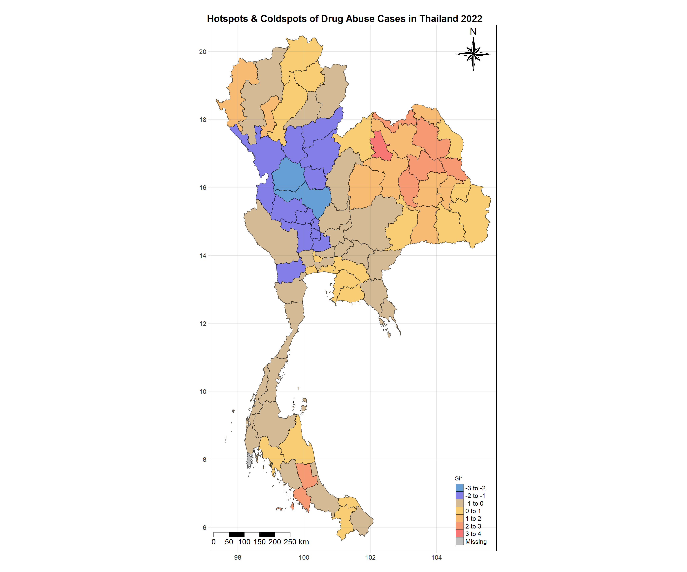

pacman::p_load(sf, tmap, tidyverse, ggplot2, sfdep)Take-home Exercise 2
Overview
Drug abuse is associated with significant negative health, financial and social consequences. Yet, illicit drug consumption remains highly prevalent and continues to be a growing problem worldwide. In 2021, 1 in 17 people aged 15–64 in the world had used a drug in the past 12 months. Notwithstanding population growth, the estimated number of drug users grew from 240 million in 2011 to 296 million in 2021.
The geopolitics of Thailand which is near the Golden Triangle of Indochina, the largest drug production site in Asia, and the constant transportation infrastructure development made Thailand became market and transit routes for drug trafficking to the third countries.
In Thailand, drug abuse is one of the major social issue. There are about 2.7 million youths using drugs in Thailand. Among youths aged between 15 and 19 years, there are about 300,000 who have needs for drug treatment. Most of Thai youths involved with drugs are vocational-school students, which nearly doubles in number compared to secondary-school students.
Objectives
To discover:
if the key indicators of drug abuse of Thailand are independent from space.
If the indicators of drug abuse is indeed spatial dependent, then, you would like to detect where are the clusters and outliers, and the hotspots.
Last but not least, you are also interested to investigate how the observation above evolve over time.
Tasks
The specific tasks of this take-home exercise are as follows:
Using appropriate function of sf and tidyverse, preparing the following geospatial data layer:
a study area layer in sf polygon features. It must be at province level (including Bangkok) of Thailand.
a drug abuse indicators layer within the study area in sf polygon features.
Using the extracted data, perform global spatial autocorrelation analysis by using sfdep methods.
Using the extracted data, perform local spatial autocorrelation analysis by using sfdep methods.
Describe the spatial patterns revealed by the analysis above.
The Data
For the purpose of this take-home exercise, two data sets shall be used, they are:
Thailand Drug Offenses [2017-2022] at Kaggle.
Thailand - Subnational Administrative Boundaries at HDX. You are required to use the province boundary data set.
Installing the Dependencies
Loading the required packages
sf Needed to handle spatial data through the new simple features standard
tmap Create thematic maps, particularly chloropleth maps in our case
tidyverse For easy data manipulation and some visualisation
ggplot2 A step above the usual visualisations, like histograms
sfdep Spatial dependence with spatial features, the highlight of this take home exercise. The spacetime object is particularly useful
Importing the Datasets
Importing the tha_admbnda_adm1_rtsd_20220121 dataset as variable thbd, which contains polygons representing the borders of the provinces of Thailand.
thbd <- st_read(
dsn = "data/geospatial",
layer = "tha_admbnda_adm1_rtsd_20220121"
)Reading layer `tha_admbnda_adm1_rtsd_20220121' from data source
`C:\javilian98\IS415-GAA\Take-home_Ex02\data\geospatial' using driver `ESRI Shapefile'
Simple feature collection with 77 features and 16 fields
Geometry type: MULTIPOLYGON
Dimension: XY
Bounding box: xmin: 97.34336 ymin: 5.613038 xmax: 105.637 ymax: 20.46507
Geodetic CRS: WGS 84Importing the thai_drug_offenses_2017_2022 aspatial dataset as thdo. This dataset contains points, representing drug cases.
thdo <- read_csv("data/aspatial/thai_drug_offenses_2017_2022.csv")Setting random seed
It is always a good practice to use set.seed() before performing simulation. This is to ensure that the computation is reproducible.
set.seed(111)Data Wrangling
Removing unused columns
For thbd (Thai boundary data), I decided to select 4 columns (Shape_Length, Shape_Area, ADM1_EN and geometry) which I think are the most useful from the dataset.
And for thdo (Thai drug offences), I decided to remove province_th column as it might not be helpful if you cannot read Thai scripts.
thbd <- thbd %>%
select(1:3, 17)
thdo <- thdo %>%
select(-province_th)Replacing column values
When analysing both datasets, I noticed that in the thbd dataset, the province names ‘Bueng Kan’ and ‘Lop Buri’ are correct. However, those names were misspelled as ‘buogkan’ and ‘Loburi’ in the thdo dataset. So we have to fix that using mutate() and recode() methods!
thdo <- thdo %>%
mutate(
province_en = recode(province_en,
"buogkan" = "Bueng Kan",
"Loburi" = "Lop Buri")
)Focusing on specific drug offenses
Firstly, let us find out how many types of drug offenses are there in the aspatial thdo dataset.
# Get distinct type_of_drug_offenses
thdo_offenses_types <- thdo %>%
distinct(types_of_drug_offenses)
thdo_offenses_types# A tibble: 16 × 1
types_of_drug_offenses
<chr>
1 drug_use_cases
2 suspects_in_drug_use_cases
3 possession_cases
4 suspects_in_possession_cases
5 possession_with_intent_to_distribute_cases
6 suspects_in_possession_with_intent_to_distribute_cases
7 trafficking_cases
8 suspects_in_trafficking_cases
9 production_cases
10 suspects_in_production_cases
11 import_cases
12 suspects_in_import_cases
13 export_cases
14 suspects_in_export_cases
15 conspiracy_cases
16 suspects_in_conspiracy_cases Below is the code for finding the number of non-zero cases per year:
thdo_year_no_cases_summary <- thdo %>%
filter(no_cases > 0) %>% # Filter for non-zero no_cases
group_by(fiscal_year) %>% # Group by year
summarise(non_zero_count = n()) %>% # Count non-zero cases per year
arrange(desc(non_zero_count)) # Arrange in descending orderprint(thdo_year_no_cases_summary)# A tibble: 6 × 2
fiscal_year non_zero_count
<dbl> <int>
1 2017 974
2 2020 974
3 2019 966
4 2018 965
5 2021 844
6 2022 830I will be focusing on the most recent year which is year 2022. So let’s filter the thdo to year 2022.
thdo <- thdo %>% filter(fiscal_year == 2022)Suspected cases may not be 100% actual cases that happened, so I am going to remove all suspected cases.
thdo <- thdo %>% filter(!grepl("suspects_", types_of_drug_offenses))Since the main analysis of this assignment is focusing on drug abuse, I am going to filter the data related to that offense.
thdo <- thdo %>% filter(types_of_drug_offenses == "drug_use_cases")Joining Datasets
In this section, I would like to join the row data of each province from thbd with thdo.
When I tried running the left_join command initially, the output (image below) recommended to me to perform a cross_join, which outputs over 57,000 rows of data from the initial 7,000+ rows of data.
And In order to perform a left join, there needs to be identical column name and values between the two datasets (thbd and thdo). The two datasets have same province values but different column names (in this case, ADM1_EN and province_en from thbd and thdo respectively).

Renaming column values
My solution may not be ideal but if I change the column name from one dataset to match with the other dataset, then it would solve the issue.
In this case, let’s change the column name ADM1_EN from thbd to province_en from thdo.
thbd = rename(thbd, province_en = ADM1_EN)Let’s take a look at the output to see if the column name has been changed.
colnames(thbd)[1] "Shape_Leng" "Shape_Area" "province_en" "geometry" Indeed it has been changed. Nice!
Performing the left join
thbddo <- left_join(thbd, thdo, by = join_by(province_en))Global Measures of Spatial Autocorrelation
In this section, I will be performing spatial complete randomness test for global spatial autocorrelation.
Before I can compute the global spatial autocorrelation statistics, I’ll need to construct a spatial weights of the study area. The spatial weights is used to define the neighbourhood relationships between the geographical units (i.e. province) in the study area.
Deriving Queen’s contiguity weights
When I tried to compute the Queen’s contiguity weights, I received an error in RStudio mentioning “cannot allocate vector of size 7.9 Gb”. Unfortunately, my solution for it is to scale down to a year’s worth of data.

When using the st_contiguity() method, I encountered an error mentioning some data has empty neighbours. I could either remove it entirely but this would affect the number of provinces and might skew the overall analysis, or the more optimal way is to create a buffer (learnt from the previous hands-on exercise) to connect features in the data.
# Create a buffer to connect features
buffered_geometries <- st_buffer(thbddo$geometry, dist = 100) # Adjust distance as needed
# Recalculate neighbors using buffered geometries
nb_buffered <- st_contiguity(buffered_geometries)
# Create weights with the buffered neighbors
thbddo_q <- thbddo %>%
mutate(nb = nb_buffered,
wt = st_weights(nb_buffered, style = "W"),
.before = 1)Now I can successfully compute the queen.
thbddo_qSimple feature collection with 77 features and 8 fields
Geometry type: MULTIPOLYGON
Dimension: XY
Bounding box: xmin: 97.34336 ymin: 5.613038 xmax: 105.637 ymax: 20.46507
Geodetic CRS: WGS 84
First 10 features:
nb
1 2, 3, 4, 15, 59, 60
2 1, 15
3 1, 4, 5, 59
4 1, 3, 5, 10, 17
5 3, 4, 6, 7, 10, 58, 59
6 5, 7, 8, 58
7 5, 6, 8, 10, 19, 25, 48, 55
8 6, 7, 9, 48, 58
9 8, 48, 49
10 4, 5, 7, 17, 19
wt
1 0.1666667, 0.1666667, 0.1666667, 0.1666667, 0.1666667, 0.1666667
2 0.5, 0.5
3 0.25, 0.25, 0.25, 0.25
4 0.2, 0.2, 0.2, 0.2, 0.2
5 0.1428571, 0.1428571, 0.1428571, 0.1428571, 0.1428571, 0.1428571, 0.1428571
6 0.25, 0.25, 0.25, 0.25
7 0.125, 0.125, 0.125, 0.125, 0.125, 0.125, 0.125, 0.125
8 0.2, 0.2, 0.2, 0.2, 0.2
9 0.3333333, 0.3333333, 0.3333333
10 0.2, 0.2, 0.2, 0.2, 0.2
Shape_Leng Shape_Area province_en fiscal_year
1 2.417227 0.13133873 Bangkok 2022
2 1.695100 0.07926199 Samut Prakan 2022
3 1.251111 0.05323766 Nonthaburi 2022
4 1.884945 0.12698345 Pathum Thani 2022
5 3.041716 0.21393797 Phra Nakhon Si Ayutthaya 2022
6 1.739908 0.07920961 Ang Thong 2022
7 5.693342 0.54578838 Lop Buri 2022
8 1.778326 0.06872655 Sing Buri 2022
9 2.896316 0.20907828 Chai Nat 2022
10 4.766446 0.29208711 Saraburi 2022
types_of_drug_offenses no_cases geometry
1 drug_use_cases 2755 MULTIPOLYGON (((100.6139 13...
2 drug_use_cases 1953 MULTIPOLYGON (((100.7306 13...
3 drug_use_cases 809 MULTIPOLYGON (((100.3415 14...
4 drug_use_cases 1599 MULTIPOLYGON (((100.8916 14...
5 drug_use_cases 1298 MULTIPOLYGON (((100.5131 14...
6 drug_use_cases 784 MULTIPOLYGON (((100.3332 14...
7 drug_use_cases 985 MULTIPOLYGON (((101.3453 15...
8 drug_use_cases 493 MULTIPOLYGON (((100.3691 15...
9 drug_use_cases 617 MULTIPOLYGON (((100.1199 15...
10 drug_use_cases 839 MULTIPOLYGON (((101.3994 15...Global Moran’s I Test
In this section, I use Moran’s I Test to understand the presence of systemic spatial variations of drug abuse cases. In other words, how the number of drug abuse cases in each province varies according to its surrounding provinces compared to that under spatial randomness.
global_moran_test(thbddo_q$no_cases,
thbddo_q$nb,
thbddo_q$wt)
Moran I test under randomisation
data: x
weights: listw
Moran I statistic standard deviate = 2.8114, p-value = 0.002467
alternative hypothesis: greater
sample estimates:
Moran I statistic Expectation Variance
0.216232665 -0.013157895 0.006657561 Performing Global Moran’s I Permutation Test
In practice, Monte carlo simulation should be used to perform the statistical test. For sfdep, it is supported by global_moran_perm()
thbddo_q_mc_res <- global_moran_perm(thbddo_q$no_cases,
thbddo_q$nb,
thbddo_q$wt,
nsim = 999,
zero.policy = TRUE,
na.action=na.omit)
thbddo_q_mc_res
Monte-Carlo simulation of Moran I
data: x
weights: listw
number of simulations + 1: 1000
statistic = 0.21623, observed rank = 998, p-value = 0.004
alternative hypothesis: two.sidedThe results from summary indicate that the simulated values of Global Moran’s I vary from negative to positive, with a slight skew towards negative values. If the observed Global Moran’s I value is significantly greater than the maximum of this distribution, it suggests strong positive spatial autocorrelation in your data. Conversely, if it falls below the minimum, it indicates strong negative autocorrelation.
The observed Moran’s I statistic (0.21623) is significantly higher than most of the simulated values, as indicated by the p-value of 0.004. This suggests a strong positive spatial autocorrelation in drug abuse cases in Thailand for the year 2022, meaning provinces with high drug abuse cases are likely to be near other provinces with high drug abuse cases.
summary(thbddo_q_mc_res$res[1:999]) Min. 1st Qu. Median Mean 3rd Qu. Max.
-0.22963 -0.07502 -0.02307 -0.01883 0.02989 0.26842 var(thbddo_q_mc_res$res[1:999])[1] 0.006165505To visualise the monte-carlo simulation results, we plot a histogram. Our observed result was 0.21623, which falls slightly outside the results generated from our simulation. As such, we can deem the results to be less than likely to be due to chance and that there is a significant degree of spatial autocorrelation in the number of drug abuse cases per province.
ggplot() +
aes(thbddo_q_mc_res$res[1:999]) +
geom_histogram(colour="black", fill="pink") +
labs(title = "Histogram of Simulated Moran's I For Drug Abuse Cases Year 2022",
x = "Simulated Moran's I",
y = "Occurences") +
theme_minimal()Local Measures of Spatial Autocorrelation
Local Indicators of Spatial Association (LISA) help us identify clusters among different regions. In simpler terms, LISA is a statistical method that shows how much a region is affected by its neighboring areas, with higher values indicating a stronger influence from the surroundings.
Local Moran’s I
lisa <- thbddo_q %>%
mutate(local_moran = local_moran(
no_cases, nb, wt, nsim = 99),
.before = 1) %>%
unnest(local_moran)lisaSimple feature collection with 77 features and 20 fields
Geometry type: MULTIPOLYGON
Dimension: XY
Bounding box: xmin: 97.34336 ymin: 5.613038 xmax: 105.637 ymax: 20.46507
Geodetic CRS: WGS 84
# A tibble: 77 × 21
ii eii var_ii z_ii p_ii p_ii_sim p_folded_sim skewness
<dbl> <dbl> <dbl> <dbl> <dbl> <dbl> <dbl> <dbl>
1 -0.285 -0.00289 0.149 -0.731 0.465 0.48 0.24 0.725
2 0.111 0.0133 0.0344 0.528 0.597 0.58 0.29 0.582
3 -0.165 -0.0336 0.168 -0.320 0.749 0.7 0.35 -0.921
4 0.0122 0.00120 0.000465 0.509 0.611 0.7 0.35 -0.565
5 0.132 -0.00183 0.0139 1.13 0.257 0.28 0.14 -0.342
6 0.436 0.00209 0.140 1.16 0.245 0.28 0.14 -0.541
7 0.131 -0.00766 0.0453 0.651 0.515 0.6 0.3 -0.565
8 0.637 -0.0183 0.226 1.38 0.169 0.1 0.05 -0.678
9 0.790 -0.0535 0.331 1.47 0.142 0.06 0.03 -1.01
10 0.00790 -0.0861 0.132 0.258 0.796 0.88 0.44 -0.394
# ℹ 67 more rows
# ℹ 13 more variables: kurtosis <dbl>, mean <fct>, median <fct>, pysal <fct>,
# nb <nb>, wt <list>, Shape_Leng <dbl>, Shape_Area <dbl>, province_en <chr>,
# fiscal_year <dbl>, types_of_drug_offenses <chr>, no_cases <dbl>,
# geometry <MULTIPOLYGON [°]>The output of local_moran() is a sf data.frame containing the columns ii, eii, var_ii, z_ii, p_ii, p_ii_sim.
ii: local moran statisticeii: expectation of local moran statistic; for localmoran_permthe permutation sample meansvar_ii: variance of local moran statistic; for localmoran_permthe permutation sample standard deviationsz_ii: standard deviate of local moran statistic; for localmoran_perm based on permutation sample means and standard deviationsp_ii: p-value of local moran statistic using pnorm(); for localmoran_perm using standard deviatse based on permutation sample means and standard deviations
Visualising Local Moran’s I
class(lisa)[1] "sf" "tbl_df" "tbl" "data.frame"tm_shape(lisa) +
tm_fill("ii",
palette = c("#b7dce9","#e1ecbb","#f5f3a6",
"#ec9a64","#d21b1c")) +
tm_layout(main.title = "Spatial Autocorrelation\n of Drug Abuse Cases in Year 2022 Thailand",
main.title.position = "center",
main.title.size = 1.3,
main.title.fontface = "bold",
legend.title.size = 1,
legend.text.size = 1,
frame = TRUE) +
tm_borders(col = "black", alpha = 0.6) +
tm_compass(type="8star", text.size = 1.5, size = 3, position=c("RIGHT", "TOP"))Visualising Local Moran’s I p-value
tm_shape(lisa)+
tm_fill("p_ii",
palette = c("#b7dce9","#c9e3d2","#f5f3a6","#ec9a64","#d21b1c"),
) +
tm_borders(col = "black", alpha = 0.6)+
tm_layout(main.title = "Statistical Significance of Spatial Autocorrelation\n of Drug Abuse Cases in Year 2022 Thailand",
main.title.position = "center",
main.title.size = 1.5,
main.title.fontface = "bold",
legend.title.size = 1,
legend.text.size = 1,
frame = TRUE) +
tm_borders(alpha = 0.5) +
tm_compass(type="8star", text.size = 1.5, size = 3, position=c("RIGHT", "TOP")) +
tm_scale_bar(position=c("LEFT", "BOTTOM"), text.size=1.2) +
tm_grid(labels.size = 1,alpha =0.2)Visualising Statistically Significant Local Spatial Autocorrelation Map
lisa_sig <- lisa %>%
filter(p_ii_sim < 0.05)
tm_shape(lisa)+
tm_polygons() +
tm_borders(col = "black", alpha = 0.6)+
tm_shape(lisa_sig)+
tm_fill("ii",
palette = c("#b7dce9","#e1ecbb","#f5f3a6",
"#f8d887","#ec9a64","#d21b1c"),
title = "Local Moran's I (p < 0.05)",
midpoint = NA,
legend.hist = TRUE,
legend.is.portrait = TRUE,
legend.hist.z = 0.1) +
tm_borders(col = "black", alpha = 0.6)+
tm_layout(main.title = "Statistically Significant Province-Level Spatial Autocorrelation Map \n of Drug Abuse Cases in Thailand 2022",
main.title.position = "center",
main.title.size = 1.5,
main.title.fontface = "bold",
legend.title.size = 1,
legend.text.size = 1,
frame = TRUE) +
tm_borders(alpha = 0.5) +
tm_compass(type="8star", text.size = 1.5, size = 3, position=c("RIGHT", "TOP")) +
tm_scale_bar(position=c("LEFT", "BOTTOM"), text.size=1.2) +
tm_grid(labels.size = 1,alpha =0.2)LISA Classification
The local indicator of spatial association (LISA) for each observation gives an indication of the extent of significant spatial clustering of similar values around that observation. In general, the analysis will calculate a local statistic value, a z-score, a pseudo p-value, and a code representing the cluster type for each statistically significant feature. LISA map is a categorical map showing type of outliers and clusters. There are two types of outliers namely: High-Low and Low-High outliers. Likewise, there are two type of clusters namely: High-High and Low-Low cluaters.
Specific to our study, we may infer LISA classifications as below.
High-Low Outliers: Provinces with a high value of drug abuse cases, surrounded by neighbouring provinces with low values of drug abuse cases.
Low-High Outliers: Provinces with a low value of drug abuse cases, surrounded by neighbouring provinces with high values of drug abuse cases.
High-High Clusters: Provinces with a high value of drug abuse cases, surrounded by neighbouring provinces with high values of drug abuse cases.
Low-Low Clusters: Provinces with a low value of drug abuse cases, surrounded by neighbouring provinces with low values of drug abuse cases.
Visualising Statistically Significant LISA Map for Study Area
In lisa sf data.frame we created when calculating local Moran’s Ii , we can find three fields contain the LISA categories. They are mean, median and pysal. We will use mean column to visualise LISA classification maps with relevant tmap functions.
tmap_mode("plot")
study_area_lisa <- tm_shape(lisa)+
tm_polygons() +
tm_borders(col = "black", alpha = 0.6)+
tm_shape(lisa_sig)+
tm_fill("mean",
palette = c("#b7dce9","#ec9a64","#e1ecbb", "#d21b1c"),
title = "LISA class",
midpoint = NA,
legend.hist = TRUE,
legend.is.portrait = TRUE,
legend.hist.z = 0.1) +
tm_borders(col = "black", alpha = 0.6)+
tm_layout(main.title = "Province-Level LISA Map of Drug Abuse Cases in Thailand 2022",
main.title.position = "center",
main.title.size = 1.7,
main.title.fontface = "bold",
legend.outside = TRUE,
legend.outside.position = "right",
legend.title.size = 1.8,
legend.text.size = 1.3,
frame = TRUE) +
tm_borders(alpha = 0.5) +
tm_compass(type="8star", text.size = 1.5, size = 2, position=c("RIGHT", "TOP")) +
tm_scale_bar(position=c("LEFT", "BOTTOM"), text.size=1.2) +
tm_grid(labels.size = 1,alpha =0.2)
study_area_lisaHot Spot and Cold Spot Area Analysis
Beside detecting cluster and outliers, localised spatial statistics can be also used to detect hot spot and/or cold spot areas.
The term ‘hot spot’ has been used generically across disciplines to describe a region or value that is higher relative to its surroundings (Lepers et al 2005, Aben et al 2012, Isobe et al 2015).
wm_idw <- thbddo %>%
mutate(nb = include_self(st_contiguity(geometry)),
wt = st_inverse_distance(nb, geometry,
scale = 1,
alpha = 1),
.before = 1)Next, we will calculate local Gi∗ using local_gstart_perm() function from sfdep package. This function uses a neighbour list nb and a weight list wt as an input and generate Gi∗ statistics through a Monte Carlo permutation with specified nsim. The results will then be stored into a new object called HCSA.
HCSA <- wm_idw %>%
mutate(local_Gi_star = local_gstar_perm(
no_cases, nb, wt, nsim = 99),
.before = 1) %>%
unnest(local_Gi_star)Next, we will use relevant tmap functions to visualise the result of local Gi∗ values for our study area. For visualisation purpose, we will create a new column label similar to what we did in Local Moran’s I.
tmap_mode("plot")
tm_shape(HCSA)+
tm_fill("gi_star",
palette = c("#57bfc0", "#7977f3","#f8d673","#f8b675","#f67774"),
title = "Gi*",
midpoint = 0) +
tm_borders(col = "black", alpha = 0.6)+
tm_layout(main.title = " Hotspots & Coldspots of Drug Abuse Cases in Thailand 2022",
main.title.position = "center",
main.title.size = 1.5,
main.title.fontface = "bold",
legend.title.size = 1,
legend.text.size = 1,
frame = TRUE) +
tm_borders(alpha = 0.5) +
tm_compass(type="8star", text.size = 1.5, size = 3, position=c("RIGHT", "TOP")) +
tm_scale_bar(position=c("LEFT", "BOTTOM"), text.size=1.2) +
tm_grid(labels.size = 1,alpha =0.2)
Similar to what we have done for LISA, we will only focus on provinces with statistically significant Local Getis-Ord Gi∗ values. To achieve this, we will filter out all Local Getis-Ord Gi∗ values with a p-value > 0.05. Subsequently, we will use relevant tmap functions to create a statistically significant local spatial autocorrelation map for our study area.
HCSA_sig <- HCSA %>%
filter(p_sim < 0.05)
tmap_mode("plot")
tm_shape(HCSA) +
tm_polygons() +
tm_shape(HCSA_sig)+
tm_fill("gi_star",
palette = c("#57bfc0", "#7977f3","#f8d673","#f8b675","#f67774"),
title = "Gi*",
midpoint = 0,
legend.hist = TRUE,
legend.is.portrait = TRUE,
legend.hist.z = 0.1) +
tm_borders(col = "black", alpha = 0.6)+
tm_layout(main.title = "Statistically Significant Hotspots & Coldspots \nof Drug Abuse Cases in Thailand 2022",
main.title.position = "center",
main.title.size = 1.5,
main.title.fontface = "bold",
legend.title.size = 1,
legend.text.size = 1,
frame = TRUE) +
tm_borders(alpha = 0.5) +
tm_compass(type="8star", text.size = 1.5, size = 3, position=c("RIGHT", "TOP")) +
tm_scale_bar(position=c("LEFT", "BOTTOM"), text.size=1.2) +
tm_grid(labels.size = 1,alpha =0.2)Conclusion
This study aimed to analyze drug abuse patterns in Thailand, focusing on the spatial distribution of drug-related offenses across provinces. Utilizing geospatial data and statistical methods, we sought to understand the independence of key indicators of drug abuse from spatial influences, identify clusters and outliers, and examine how these patterns evolve over time.
The Global Moran’s I test revealed significant positive spatial autocorrelation in drug abuse cases, indicating that provinces with high or low drug use rates tend to be clustered together rather than randomly distributed. This suggests that local factors—such as socioeconomic conditions, accessibility to treatment, and proximity to drug trafficking routes—play a crucial role in influencing drug abuse patterns.
The LISA analysis identified specific provinces as either hotspots (High-High clusters) or cold spots (Low-Low clusters) for drug abuse. This classification allows for targeted interventions, helping policymakers focus resources where they are most needed.
Notable high-low outliers indicate provinces with high drug abuse cases surrounded by areas with low cases, highlighting potential spillover effects or unique local factors contributing to the issue.
The Getis-Ord Gi* statistic identified significant hotspots and cold spots, reinforcing the findings from the LISA analysis. This further supports the notion that drug abuse is not uniformly distributed across Thailand, with certain regions experiencing acute challenges that require immediate attention.
While this analysis primarily focused on data from 2022, the methodology allows for ongoing evaluation of trends over time. Future studies could leverage this framework to monitor changes in drug abuse patterns in response to interventions or shifts in policy.
Recommendations for Future Research:
Broader Data Integration: Incorporating additional data sources, such as socioeconomic indicators, healthcare access, and law enforcement activities, could provide deeper insights into the factors driving drug abuse in specific regions.
Longitudinal Studies: Conducting longitudinal studies would help identify trends over time and assess the impact of policy changes on drug abuse patterns.
Qualitative Research: Engaging in qualitative research to understand community perspectives on drug abuse could enrich quantitative findings and support more effective intervention strategies.
In conclusion, this analysis underscores the importance of spatial considerations in understanding and addressing drug abuse in Thailand. By leveraging geospatial data and analytical methods, stakeholders can develop informed strategies that respond to the unique challenges faced by different provinces.
Takeaways
I think it is important to do some self-research on the country you are conducting your analysis. With the little details like having incorrect province names and not knowing about it can potentially draw you back in moments of frustration.
After doing this take-home exercise, I believed that I am further equipped with more techniques under my belt to conduct more interesting analysis in the future.